اكتشف نباتاتك المنزلية
تصفح 20 من أشهر النباتات وتعرف على أسرار العناية بها

الريحان البلدي
نباتات عطرية
الريحان البلدي
الظروف: جو دافئ وتهوية جيدة
الإضاءة: شمس مباشرة 4-6 ساعات
الري: كل 2-3 أيام
التربة: غنية وجيدة التصريف
نصيحة: قص الأطراف باستمرار لنمو كثيف
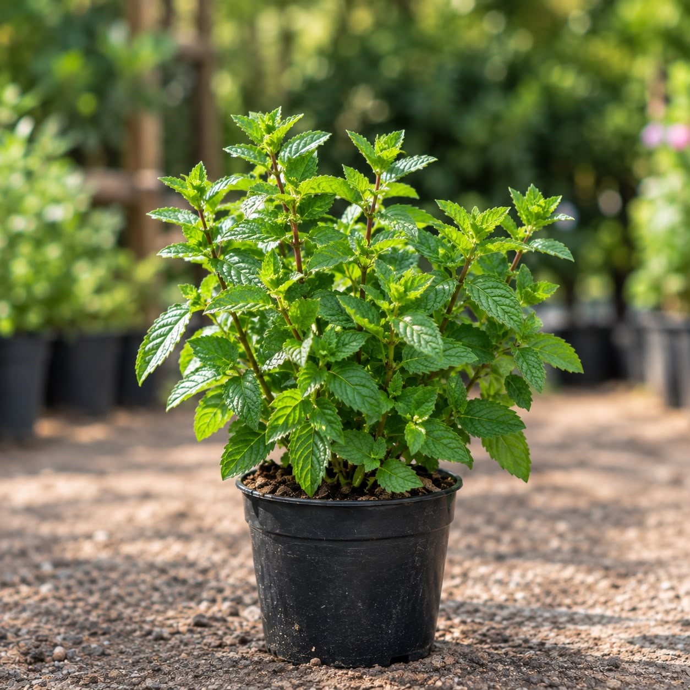
النعناع
نباتات عطرية
النعناع
الظروف: دافئة ورطبة نسبياً
الإضاءة: ضوء قوي ويفضل شمس الصباح
الري: كل 2-3 أيام
التربة: غنية وتحتفظ بالرطوبة
نصيحة: لا تترك التربة تجف تماماً
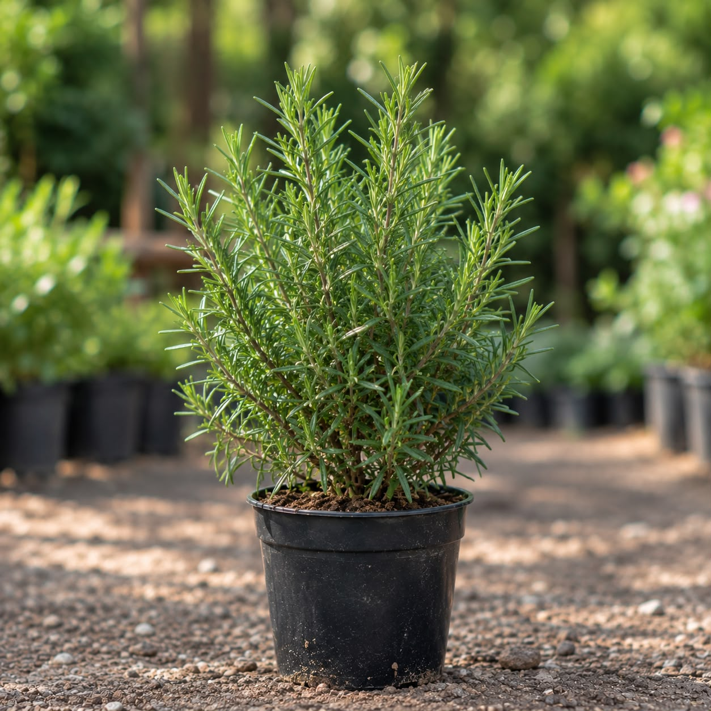
إكليل الجبل
نباتات عطرية
إكليل الجبل
الظروف: دافئة وجافة وتهوية جيدة
الإضاءة: شمس مباشرة 5-8 ساعات
الري: كل 5-7 أيام
التربة: خفيفة ورملية
نصيحة: تجنب الري الزائد لتفادي العفن
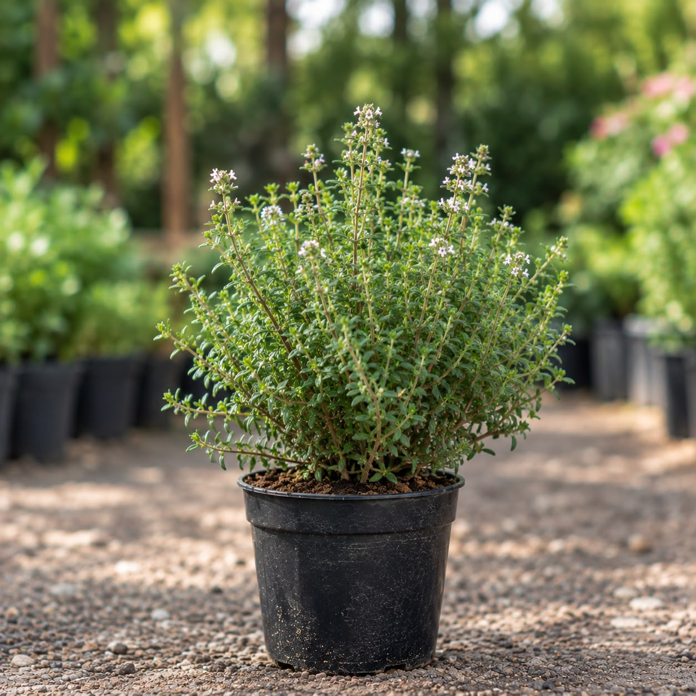
الزعتر
نباتات عطرية
الزعتر
الظروف: دافئة وجافة نسبياً
الإضاءة: شمس مباشرة 5-8 ساعات
الري: كل 5-7 أيام
التربة: خفيفة ورملية
نصيحة: اترك التربة تجف بين الري

صبار الألوفيرا
عصاريات
صبار الألوفيرا
الظروف: دافئة وجافة
الإضاءة: ضوء قوي وشمس مباشرة
الري: كل 10-20 يوماً
التربة: مخصصة للصبارات
نصيحة: اسقه فقط بعد جفاف التربة تماماً

جلد النمر
نباتات داخلية
جلد النمر
الظروف: يتحمل معظم ظروف المنزل
الإضاءة: منخفضة إلى ضوء قوي غير مباشر
الري: كل 2-4 أسابيع
التربة: خفيفة وجيدة التصريف
نصيحة: السبب الأول لموته هو الري الزائد

الزاميا
نباتات داخلية
الزاميا
الظروف: دافئة وتتحمل الجفاف
الإضاءة: منخفضة إلى قوية غير مباشرة
الري: كل 2-4 أسابيع
التربة: جيدة التصريف
نصيحة: مناسبة للمبتدئين بدون عناية مكثفة
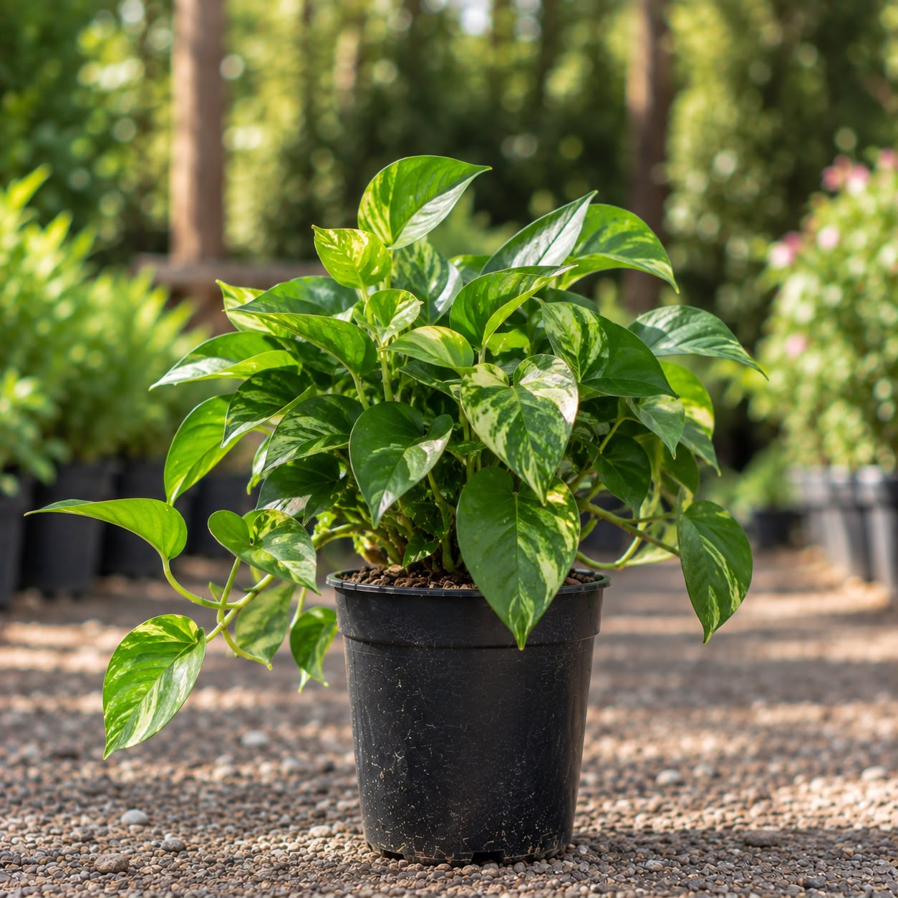
البوتس
نباتات داخلية
البوتس
الظروف: دافئة ورطوبة متوسطة
الإضاءة: ضوء قوي غير مباشر
الري: كل 7-14 يوماً
التربة: خفيفة وجيدة التصريف
نصيحة: اترك سطح التربة يجف قبل الري

نبات العنكبوت
نباتات داخلية
العنكبوت
الظروف: دافئة ورطوبة متوسطة
الإضاءة: ضوء قوي غير مباشر
الري: كل 7-14 يوماً
التربة: جيدة التصريف
نصيحة: مناسب جداً للأصص المعلقة

زنبق السلام
نباتات داخلية
زنبق السلام
الظروف: دافئة ورطبة نسبياً
الإضاءة: ضوء غير مباشر
الري: كل 5-10 أيام
التربة: غنية وخفيفة
نصيحة: يحب الرطوبة ولا يحب تجمع المياه
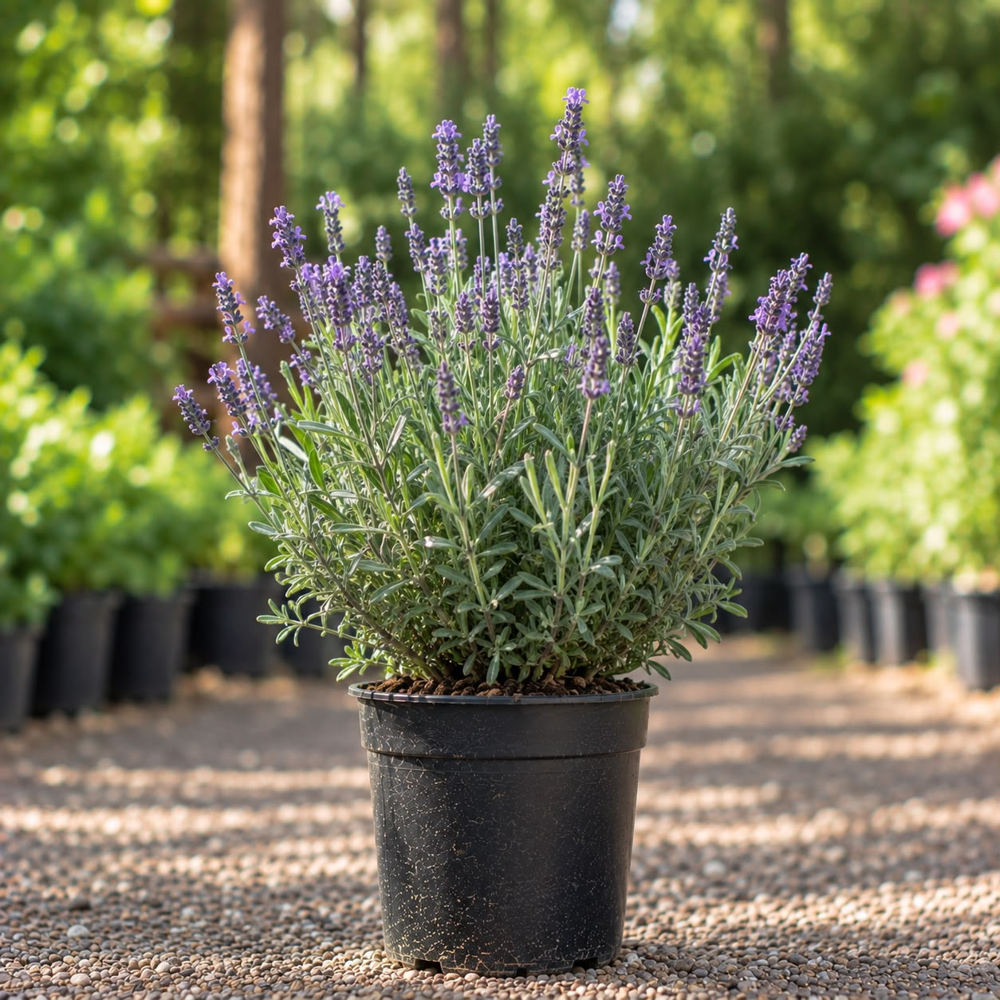
اللافندر
نباتات عطرية
اللافندر
الظروف: جافة ودافئة وتهوية جيدة
الإضاءة: شمس مباشرة 6 ساعات
الري: كل 5-7 أيام
التربة: رملية جيدة التصريف
نصيحة: لا يحب التربة المبللة باستمرار
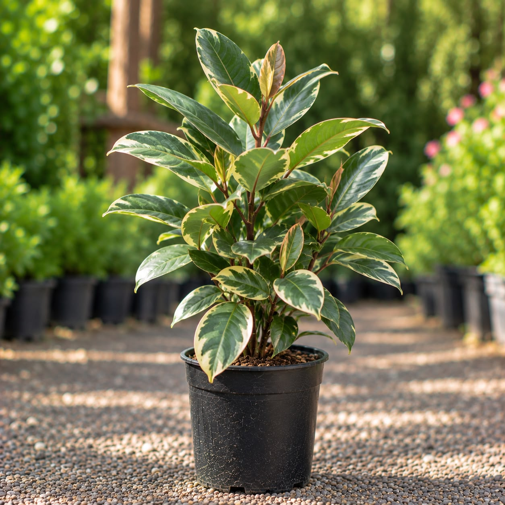
الفيكس
نباتات داخلية
الفيكس
الظروف: دافئة ومستقرة
الإضاءة: ضوء قوي غير مباشر
الري: كل 7-10 أيام
التربة: غنية وجيدة التصريف
نصيحة: لا تغير مكانه كثيراً

الياسمين البلدي
نباتات خارجية
الياسمين البلدي
الظروف: دافئة ومشمسة
الإضاءة: شمس مباشرة 4-6 ساعات
الري: كل 3-5 أيام
التربة: غنية وجيدة التصريف
نصيحة: التقليم يساعد على زيادة التزهير
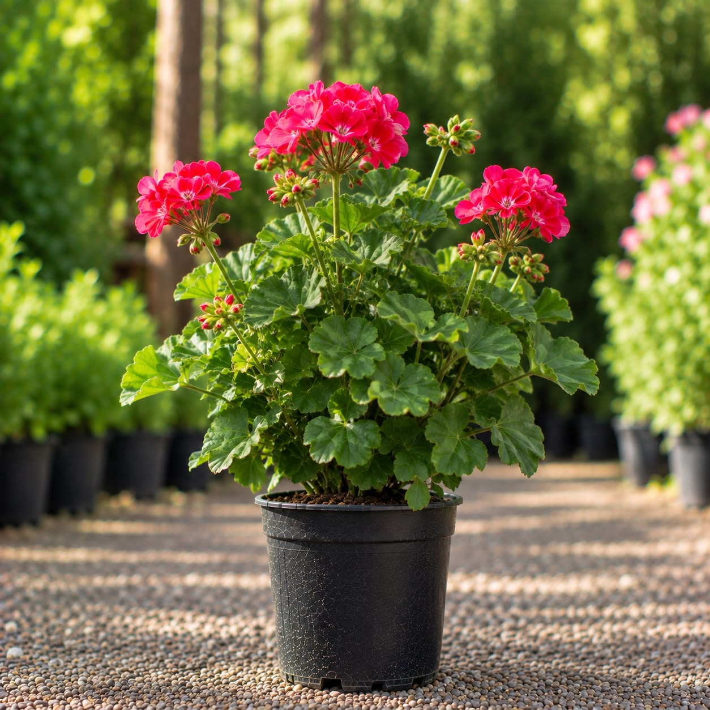
الجرانيوم
نباتات خارجية
الجرانيوم
الظروف: دافئة ومشمسة
الإضاءة: شمس مباشرة 4-6 ساعات
الري: كل 3-5 أيام
التربة: خفيفة وجيدة التصريف
نصيحة: أزل الزهور الذابلة لنمو جديد
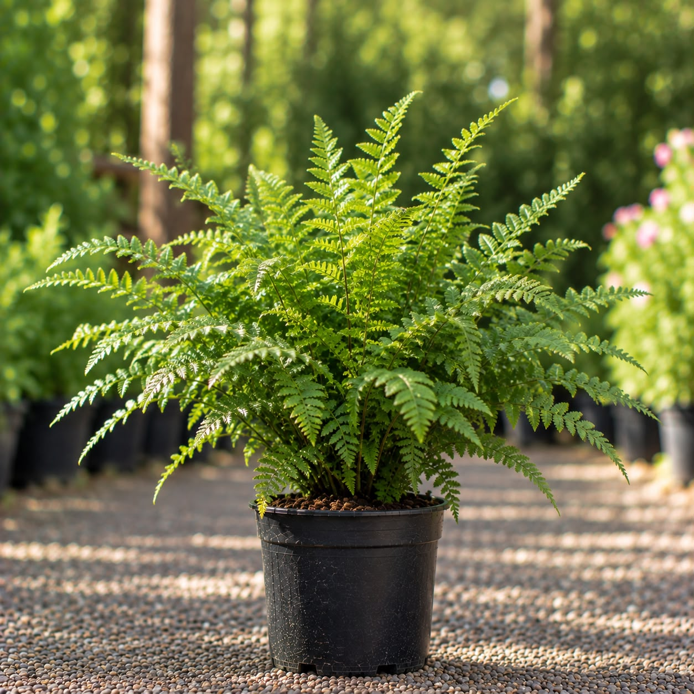
السرخس
نباتات داخلية
السرخس
الظروف: رطوبة عالية وحرارة معتدلة
الإضاءة: ضوء قوي غير مباشر
الري: كل 3-5 أيام
التربة: تحتفظ بالرطوبة
نصيحة: لا تترك التربة تجف تماماً

الكراسولا
عصاريات
الكراسولا
الظروف: دافئة وجافة
الإضاءة: ضوء قوي وشمس صباحية
الري: كل 10-20 يوماً
التربة: رملية جيدة التصريف
نصيحة: تجنب كثرة الري لأنها تخزن المياه
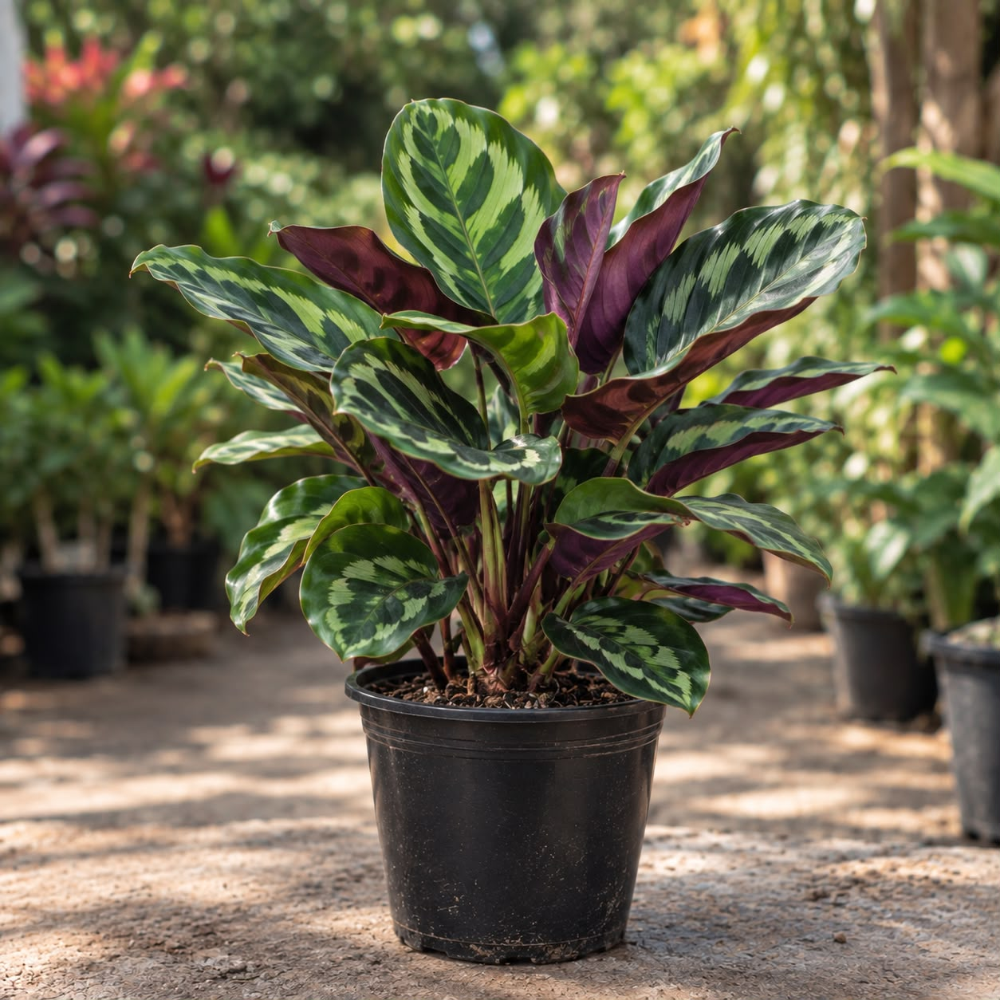
الكالاتيا
نباتات داخلية
الكالاتيا
الظروف: دافئة ورطبة
الإضاءة: ضوء قوي غير مباشر
الري: كل 5-7 أيام
التربة: خفيفة تحتفظ بالرطوبة
نصيحة: ابعدها عن الشمس المباشرة والهواء الجاف
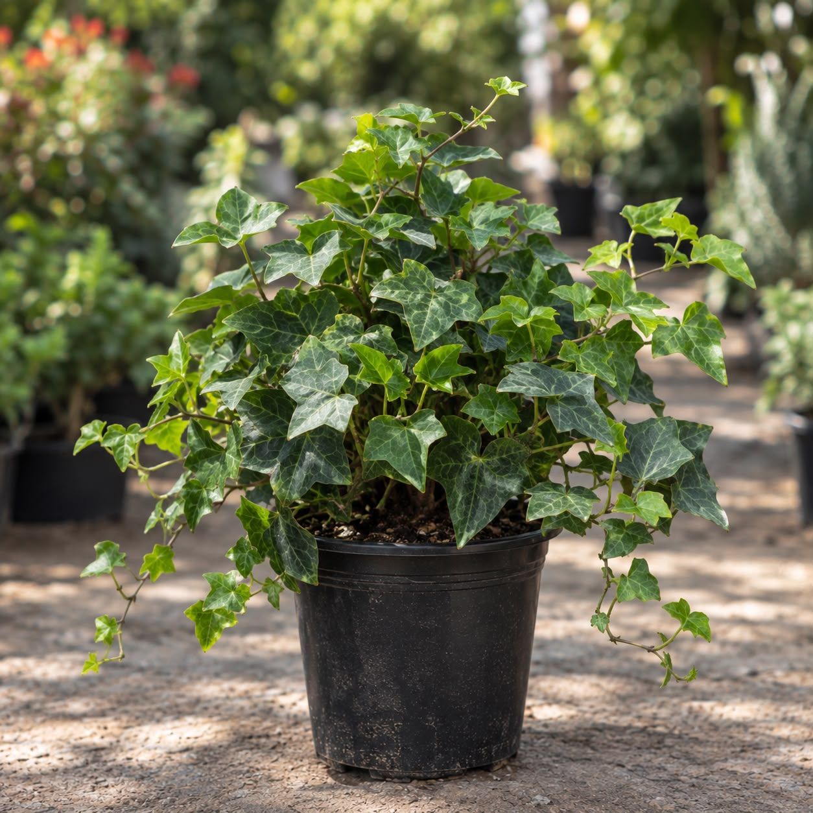
اللبلاب
نباتات خارجية
اللبلاب
الظروف: معتدلة إلى دافئة
الإضاءة: ضوء قوي غير مباشر
الري: كل 7-10 أيام
التربة: خفيفة وجيدة التصريف
نصيحة: قص الأطراف للحفاظ على الكثافة
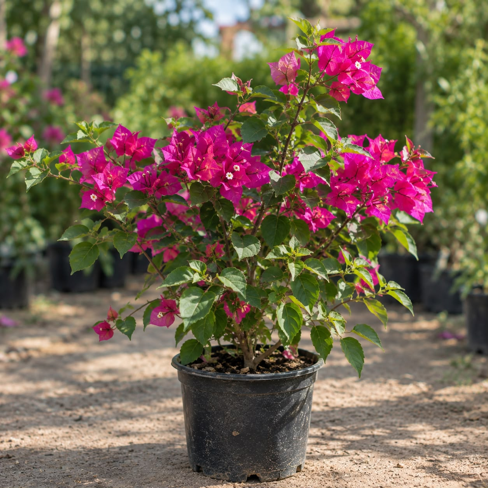
الجهنمية
نباتات خارجية
الجهنمية
الظروف: دافئة وجافة ومشمسة
الإضاءة: شمس مباشرة 6-8 ساعات
الري: كل 3-5 أيام
التربة: رملية وخفيفة
نصيحة: الشمس القوية مهمة للحصول على أزهار
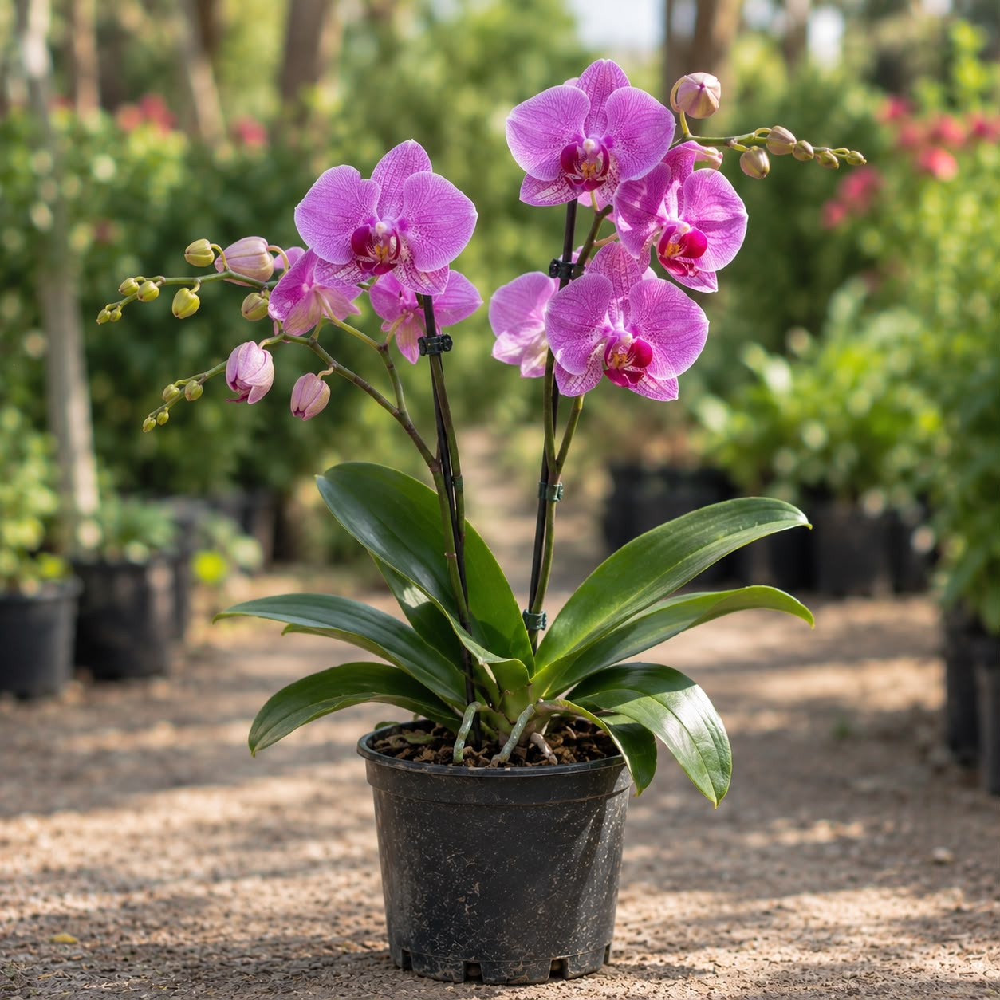
الأوركيد
نباتات داخلية
الأوركيد
الظروف: دافئة ورطبة وجيدة التهوية
الإضاءة: ضوء قوي غير مباشر
الري: كل 7 أيام
التربة: خليط مخصص مثل لحاء الأشجار
نصيحة: لا تترك الجذور في المياه